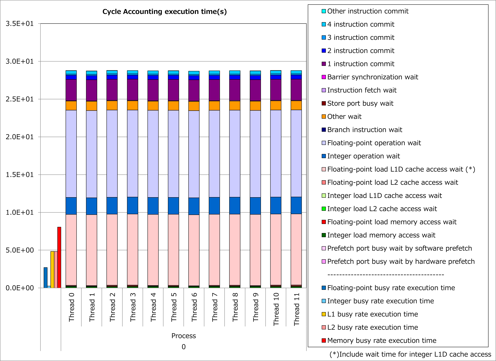
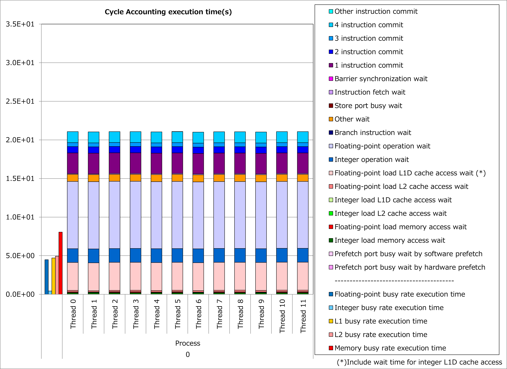

3.2. Striping of Innermost Loop with Small Iteration Count¶
3.2.1. Motivation¶
Fujitsu Fortran/C/C++ compilers try to apply a compiler optimization of software pipelining for exploiting computational performance of A64FX processors. However, since the software pipelining schedules calculations for several different loop iterations to be executed in parallel, there are cases where effect of the optimization can not be obtained when a loop of optimization target has a small iteration count.
In such cases, users can advise the compilers to apply an optimization of loop striping as shown below, by inserting an Optimization Control Line (OCL) of “striping” into the source program.
DO i = 1, n
a(i) = b(i) + c(i)
END DO
DO i = 1, n, 2
tmp_b1 = b(i)
tmp_b2 = b(i+1)
tmp_c1 = c(i)
tmp_c2 = c(i+1)
tmp_a1 = tmp_b1 + bmp_c1
tmp_a2 = tmp_b2 + tmp_c2
a(i) = tmp_a1
a(i+1) = tmp_a2
END DO
As a result, even if the iteration count is relatively small, calculations for different loop iterations are executed in parallel and it might lead to reduction of execution time.
3.2.2. Applied Example¶
Referring to an example presented in “Meetings for application code tuning on A64FX computer systems”, performance improvement by applying this technique is shown below. In this example, an OCL of “striping” was added to a loop for for-variable jj, which has a relatively small iteration count.
#pragma loop norecurrence
for (int jj = 0; jj < jnum; jj++) {
flt_t forcelj, evdwl;
forcelj = evdwl = (flt_t)0.0;
int j, jtype, sbindex;
if (!ONETYPE) {
sbindex = jlist[jj] >> SBBITS & 3;
j = jlist[jj] & NEIGHMASK;
} else
j = jlist[jj];
const flt_t delx = xtmp - x[j].x;
const flt_t dely = ytmp - x[j].y;
const flt_t delz = ztmp - x[j].z;
if (!ONETYPE) {
jtype = x[j].w;
cutsq = ljc12oi[jtype].cutsq;
}
const flt_t rsq = delx * delx + dely * dely + delz * delz;
flt_t factor_lj;
if (!ONETYPE) factor_lj = special_lj[sbindex];
flt_t r2inv = 1.0 / rsq;
flt_t r6inv = r2inv * r2inv * r2inv;
if (rsq > cutsq) r6inv = (flt_t)0.0;
if (!ONETYPE) {
lj1 = ljc12oi[jtype].lj1;
lj2 = ljc12oi[jtype].lj2;
}
forcelj = r6inv * (lj1 * r6inv - lj2);
flt_t fpair;
if (!ONETYPE)
fpair = factor_lj * forcelj * r2inv;
else
fpair = forcelj * r2inv;
const flt_t fpx = fpair * delx;
fxtmp += fpx;
if (NEWTON_PAIR) f[j].x -= fpx;
const flt_t fpy = fpair * dely;
fytmp += fpy;
if (NEWTON_PAIR) f[j].y -= fpy;
const flt_t fpz = fpair * delz;
fztmp += fpz;
if (NEWTON_PAIR) f[j].z -= fpz;
if (EFLAG) {
if (!ONETYPE) {
lj3 = lj34i[jtype].lj3;
lj4 = lj34i[jtype].lj4;
offset = ljc12oi[jtype].offset;
}
evdwl = r6inv * (lj3 * r6inv - lj4);
if (rsq < cutsq) evdwl -= offset;
if (!ONETYPE) evdwl *= factor_lj;
sevdwl += evdwl;
if (eatom) {
fwtmp += (flt_t)0.5 * evdwl;
if (NEWTON_PAIR)
f[j].w += (flt_t)0.5 * evdwl;
}
}
if (NEWTON_PAIR == 0)
IP_PRE_ev_tally_nborv(vflag, delx, dely, delz, fpx, fpy, fpz);
}
#pragma loop norecurrence
#pragma loop striping 2
for (int jj = 0; jj < jnum; jj++) {
...
}
Results of cycle accounting for executions before/after applying the technique are shown in graphs below. Parameters for the loop execution are as follows:
ONETYPE =1, EFLAG = 0, NEWTON_PAIR = 1, jnum = 26~49 (37.5 on average)
Comparing the right graph for the technique applied to the left graph for the original, waiting time for floating-point calculation and L1D cache access decreased and execution time was reduced by 27%. In this example, decrease of waiting time for L1D cache access is considered to be due to many non-contiguous array references.
 {kind=link}
{kind=link}
3.2.3. Real Cases¶
Real cases related to this technique are presented in “Meetings for application code tuning on A64FX computer systems” as follows:
3.2.4. References¶
Notice: Access rights for Fugaku User Portal are required to read the above documents.